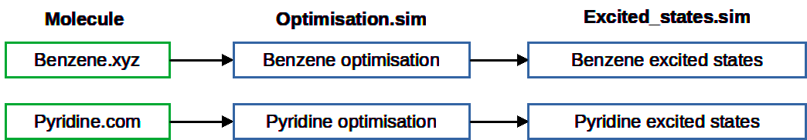

Digichem Submit#
Command Line Interface (CLI)#
Calculations are submitted using the digichem submit command:
$ digichem submit COORDINATE_FILE -m METHOD_FILE
Each calculation consists of two parts:
The coordinate file, which specifies the molecule.
The calculation method, which specifies the calculation options (eg, the functional and basis set).
Input Structures (Coordinate Files)#
Coordinate files are specified after the digichem submit command:
$ digichem submit Benzene.xyz
Multiple coordinate files can be specified and they will all be submitted to the same method:
$ digichem submit Benzene.xyz Pyridine.xyz
Multiple coordinate files are always queued to run in parallel so the ordering of the coordinate files is generally not important. Molecules that are submitted first (ie, are earlier in the queue) may run before later submissions, but this depends on the configuration of the underlying resource management system.
Digichem supports a wide range of different coordinate file formats and these can be freely intermixed. There is no need to match the format of a coordinate file to a given calculation engine (so the Gaussian specific .com format can be used with a Turbomole calculation, and so on).
Only the geometry, charge and multiplicity (if available) are extracted from the coordinate file. Any calculation options (for example, in a Gaussian .com or ORCA .inp file) will be ignored, and should instead be specified in the method file (see below).
For the full list of supported file types, see Supported File Formats.
Calculation Options (Method Files)#
Calculation options are specified by methods. These act like templates, and apply to every coordinate file that is submitted.
Methods can be chosen either from method files or from the built-in library. Method files can be specified using the -m option:
$ digichem submit Benzene.xyz -m Optimisation.sim
While methods from the library can be specified using the -c option and their unique code:
$ digichem submit Benzene.xyz -c 1/1/1
Or by their unique name (using the same -c option), if these are known:
$ digichem submit Benzene.xyz -c "Single Node SLURM/Gaussian 16/[Gaussian Optimisation, Gaussian B3LYP (GD3BJ), Gaussian Gas Phase, 'Gaussian 6-31G(d,p)']"
To explore which methods are included in the library, see the section on the Interactive Interface below.
Multiple methods can be specified using a mix of any of the method formats:
$ digichem submit Benzene.xyz -m Optimisation.sim -c 1/1/1
Multiple methods are always queued to run in series using the output geometry from the previous calculation. The order in which the methods are specified is the same order in which the calculations will be performed. This is a very powerful feature which allows chains of calculations to be easily setup in advance.
For example, the following command will submit four calculations to the queue:
$ digichem submit Benzene.xyz Pyridine.com -m Optimisation.sim Excited_states.sim
First, two optimisations will be queued, one each for the ‘Benzene’ and ‘Pyridine’ molecules. Once each of these calculations is completed, the optimised geometry will be automatically extracted and the excited states calculation will be queued, as demonstrated by the following flow diagram:
This pattern can be extended to any number of coordinate files and/or any number of methods, so computational studies of arbitrary size can be handled with ease.
Note
You can freely intermix different calculation engines in the method queue. The output from one program is always correctly formatted for the next program.
To learn more about method files, including what options are supported, please see the relevant section here.